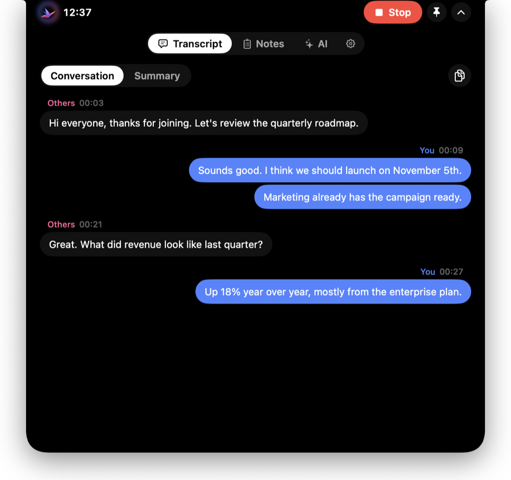
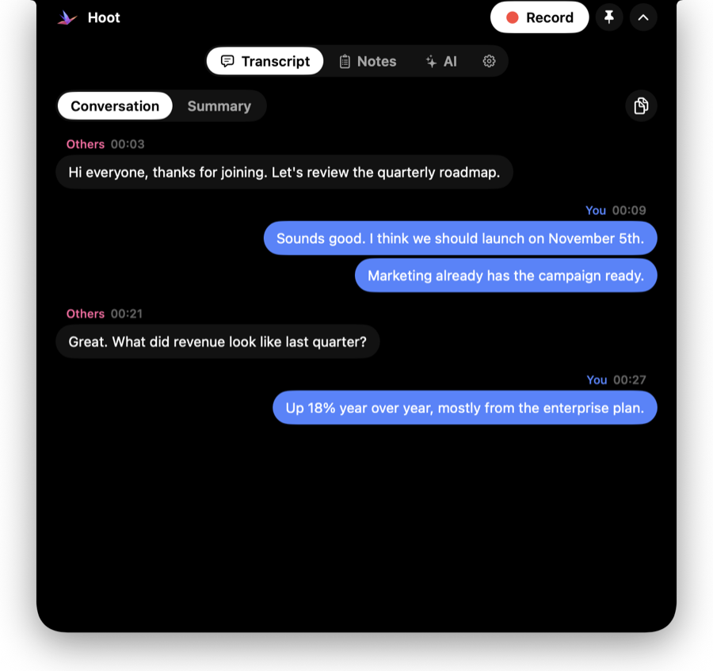
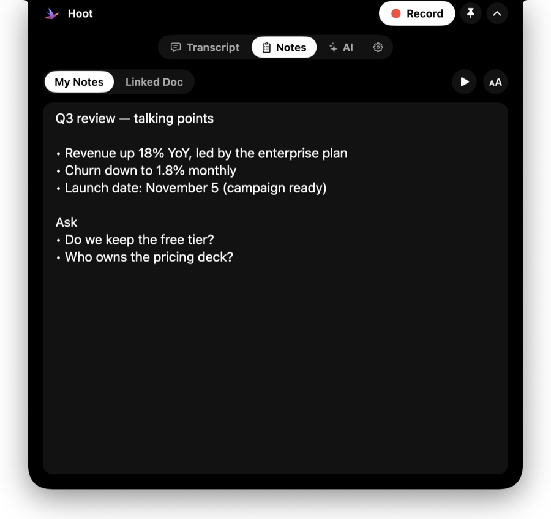
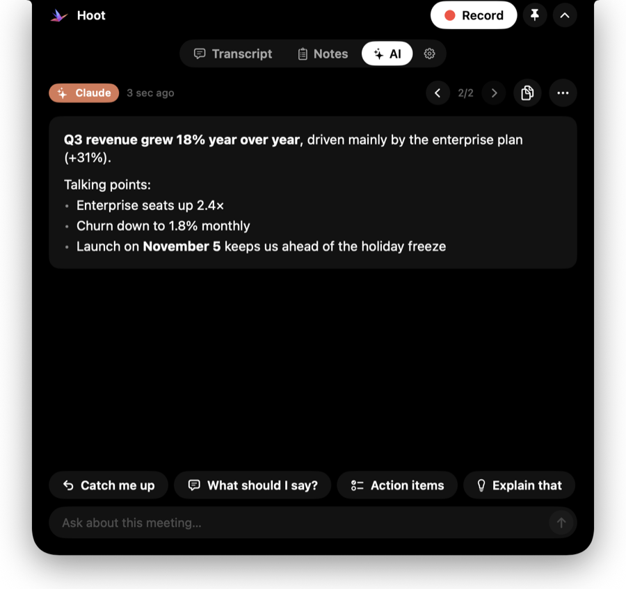
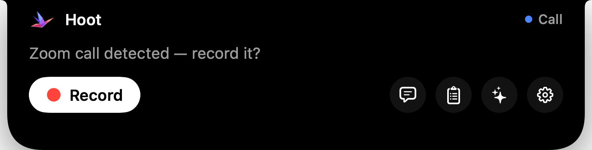

Hoot lives in your MacBook's notch, transcribes both sides of any call right on your Mac, and hands you the summary and action items when you hang up.

Hoot stays out of the way until you need it — then it's one click, one shortcut, or one glance at the notch.
A Dynamic Island for your MacBook: a timer and live voice bars while recording, Record and quick links when you point at it — and everything opens right there.
Your mic and the call's audio are transcribed separately with Whisper — on your Mac. Works with Zoom, Meet, Teams, FaceTime, Slack and anything else.
When you stop, Apple Intelligence writes the summary, decisions, action items and open questions — on-device, no account, no upload.
Keep talking points beside the call, link a Google Doc that updates live, and let the teleprompter scroll while you present.
Answers from Claude, ChatGPT and Gemini show up beside the call. Or ask “What should I say?” and get an answer from the meeting so far.
Hoot is excluded from screen sharing and recordings, so your notes and transcript are for your eyes only.
Transcript, notes and AI open inside the island at the top of your screen — no windows to juggle, and none of it shows up when you share your screen.



Most meeting tools upload your conversations. Hoot doesn't have a server to upload them to.

Needs a Mac with Apple Silicon (M1 or newer) and macOS 26 or later.
Get Hoot.dmg, open it and drag Hoot onto the Applications folder.
If macOS says it can't verify Hoot: click Done, then System Settings › Privacy & Security › Open Anyway. Only once.
The Setup checklist asks for the Microphone and System Audio, then downloads the speech model (≈550 MB) once.
Point at the notch and hit Record — or press ⌃⌥R in any app.
Yes. It's open source under the MIT license. There's no paid tier and no account.
All of them. Hoot listens to your microphone and your Mac's audio output, so it works with Zoom, Google Meet, Teams, FaceTime, Slack huddles, Discord, WhatsApp — even a YouTube video.
Yes — Hoot draws the same island at the top centre of your screen, and it works exactly the same.
Hoot isn't distributed through the App Store, so macOS asks you to confirm once. Use System Settings › Privacy & Security › Open Anyway. The source is on GitHub if you'd like to build it yourself.
Whisper handles about 100 languages and can detect them automatically. You can also pick one in Settings › General.
At rest Hoot uses under 100 MB of memory and no CPU. The speech engine only loads for a meeting and is released a few minutes after it ends (or after a call you didn't record), and Hoot only reads your AI apps during a meeting or while its AI tab is open.
Hoot checks GitHub once a day and tells you in the island when a new version is out — download it and drag it onto Applications again.